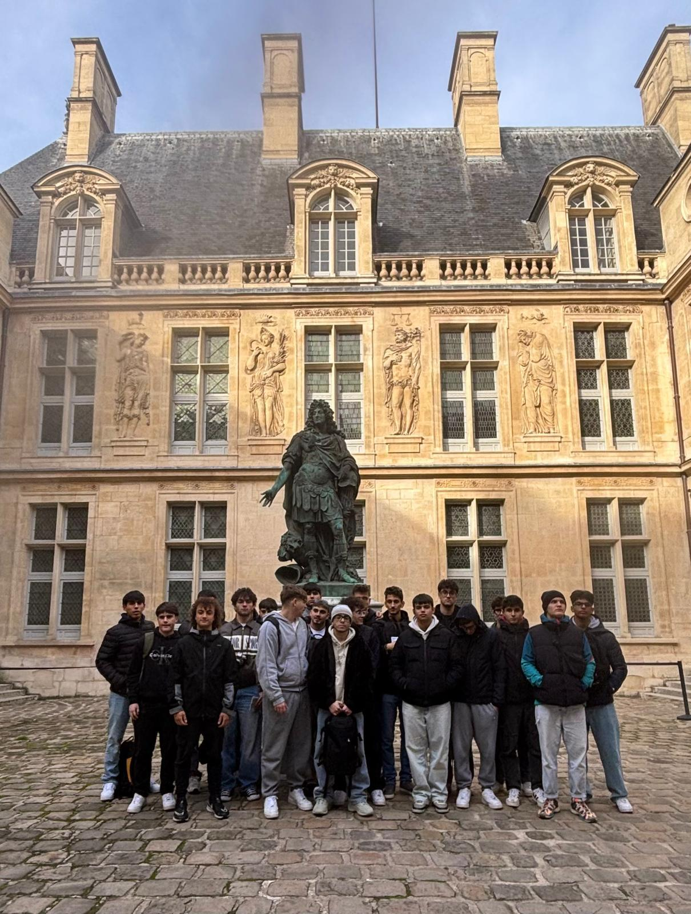
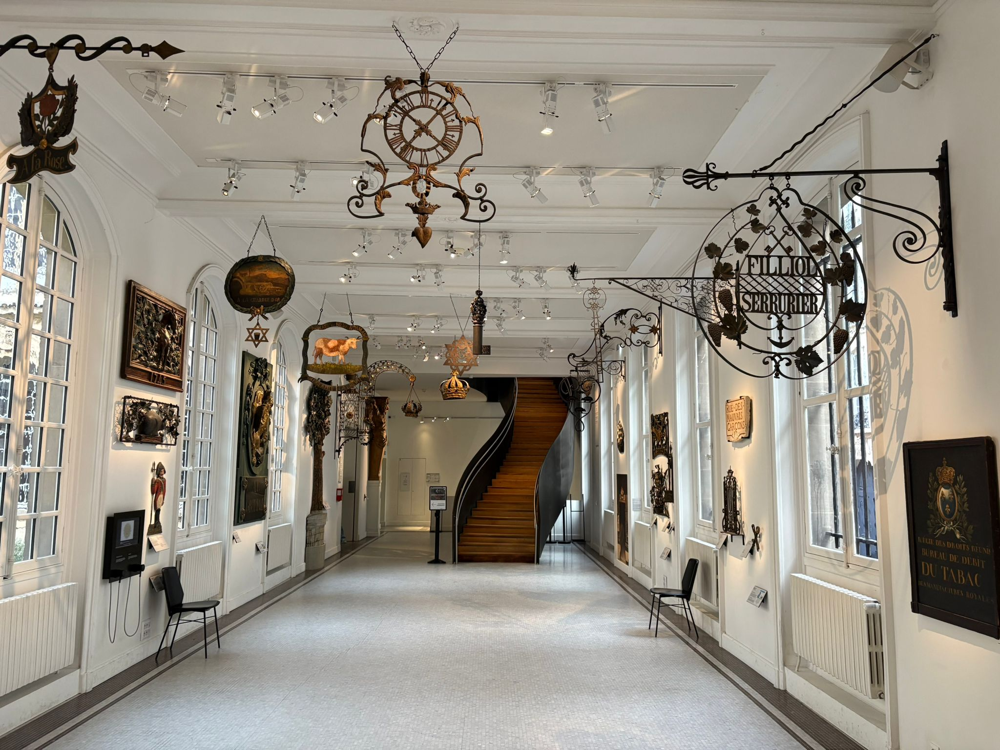
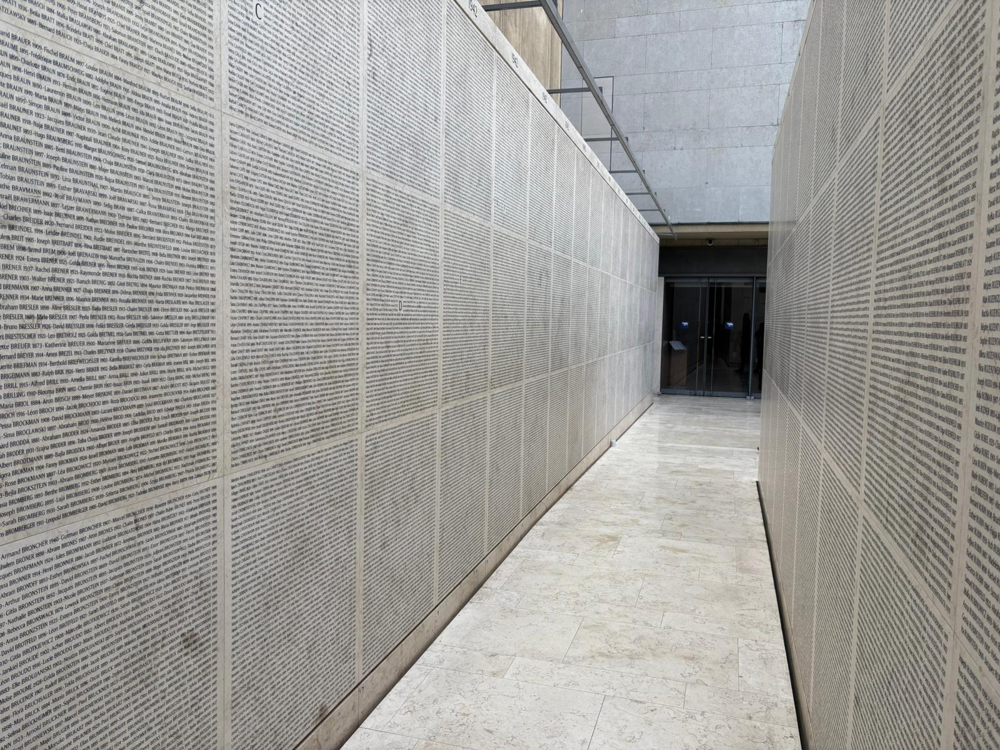
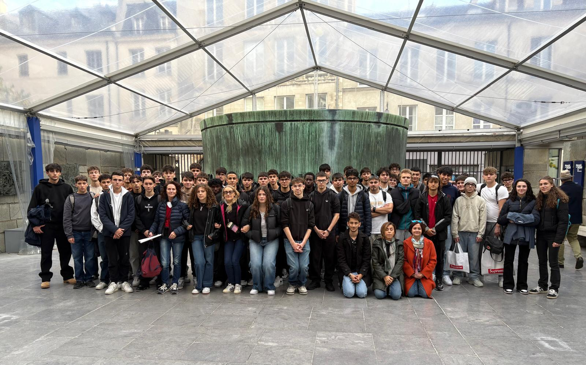

Musée Carnavalet
A journey through the history of Paris via collections, paintings, and artifacts that tell the story of the city from the 16th century to the Belle Époque.
Learn more →


An itinerary in the historic heart of Paris through memory, art, and Jewish identity.

A journey through the history of Paris via collections, paintings, and artifacts that tell the story of the city from the 16th century to the Belle Époque.
Learn more →
A documentation and memory center for the Holocaust, dedicated to the French Jewish community and the victims of deportation.
Learn more →
A unique photographic testimony of Auschwitz deportees, found by Lili Jacob in 1945, now on display at the Memorial.
Learn more →Departure from B&B Hotel Paris Porte de la Villette
Free admission | 23 Rue de Sévigné – 3rd Arr.
17 Rue Geoffroy-l’Asnier – 4th Arr. (Free admission)
Topic: Deportation from France
Lead Teachers: Angelini Cristina, Bassi Silvia
Official Sites:
Musée Carnavalet
Mémorial de la Shoah